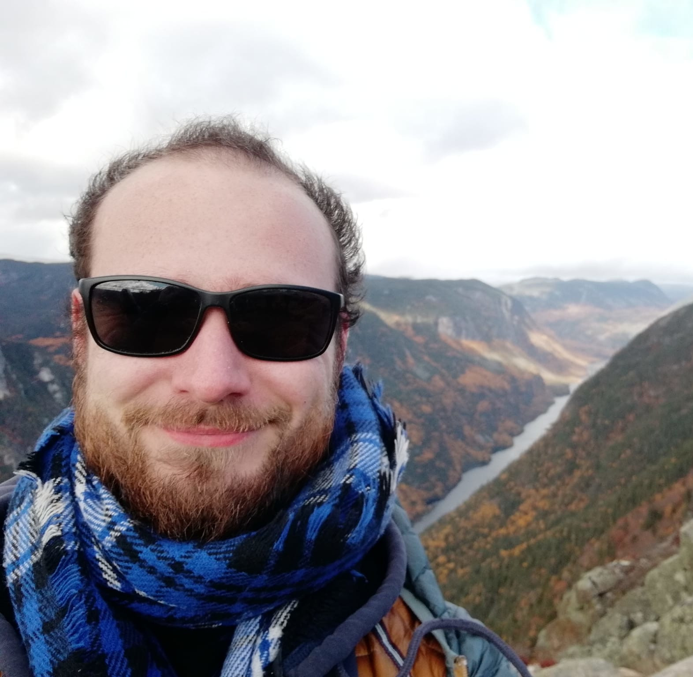
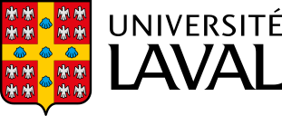

Hello, I am Louis Ohl, a happy PhD student enrolled both at the Université Côte d'Azur (Nice, France) and the Université Laval (Quebec, Canada). I am currently focusing on the detection and qualification of the aortic stenosis, a severe cardiac disease, throughout deep learning methods.
I graduated from two engineering programs focusing on computer science. One from the Institut National des Sciences Appliquées de Lyon (INSA Lyon, France) and another one from the KTH Royal Institute of Technology (Stockholm, Sweden). I try to orient my research as best as possible on the usage of artificial intelligence in health, for example through my Mater's thesis and my PhD. I appreciate thinking about how the perception of the space we have, and thus the way we draw decision boundaries, can lead to a decision or another. At the moment, my main skills involve unsupervised learning, specifically clustering, and deep learning methods.
PhD Student at Université Côte d'Azur (Nice, France) and Université Laval (Quebec, Canada): Statistical learning in Cardiology. Funds: France-Canada Research Funds for mobility and a dedicated fund from the French Ambassy in Canada
If you want to read the exact same things as in this website, then take a look at my CV
Université Côte d'Azur, Inria, CNRS, I3S, Maasai team // CHU de Québec Research Center, Laval University
This master thesis focused on the detection of adversarial drug reactions inside health records.
I had the pleasure to build a backend interface between the Azure Cognitive Services (Microsoft) and the SharePoint environment in order to automate content analysis in products of Sword SA.
I tried to minimise the number of values that neural networks weights can take, e.g. binarising or ternarising, in order to implement them in a cost-efficient way on dedicated FPGA chips.
This is unbelievably funny that you go back to my very first work experience. I was discovering how to build plane propellers (and some other important parts) during a mandatory internship at the INSA Lyon.